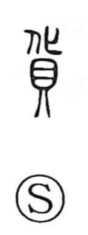

貨

Uncategorized
Kun: | On: ka
goods ・ money ・ treasure
Explanation
A picto-phonetic character: 化 supplies the on reading ka and, as a graph that originally shows two bodies laid out, carries the sense of change—hence exchange—while 貝 depicts the cowry shell used as early currency. In antiquity, such South Sea cowries were prized as “shell money” (貝貨) and revered for their life-producing power. As media of exchange later broadened to bronze tools and textiles, the graph appears in terms like 刀貨 (“knife money”) and 貨幣 (“coinage,” with 幣 meaning silk). Rooted in this history, 貨 came to denote money and valuables, and by extension goods, wares, and treasure.